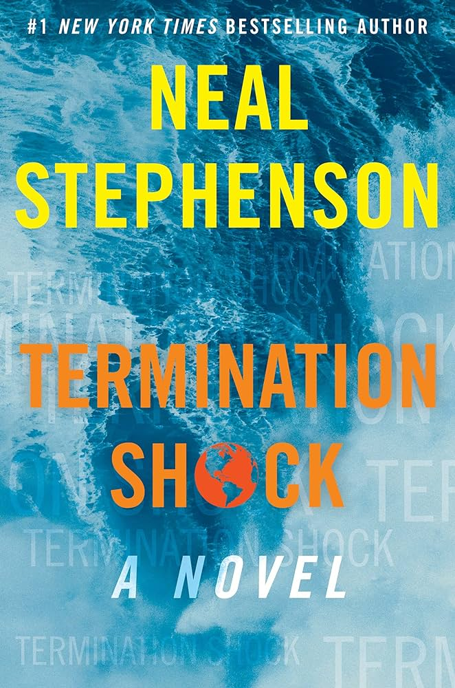
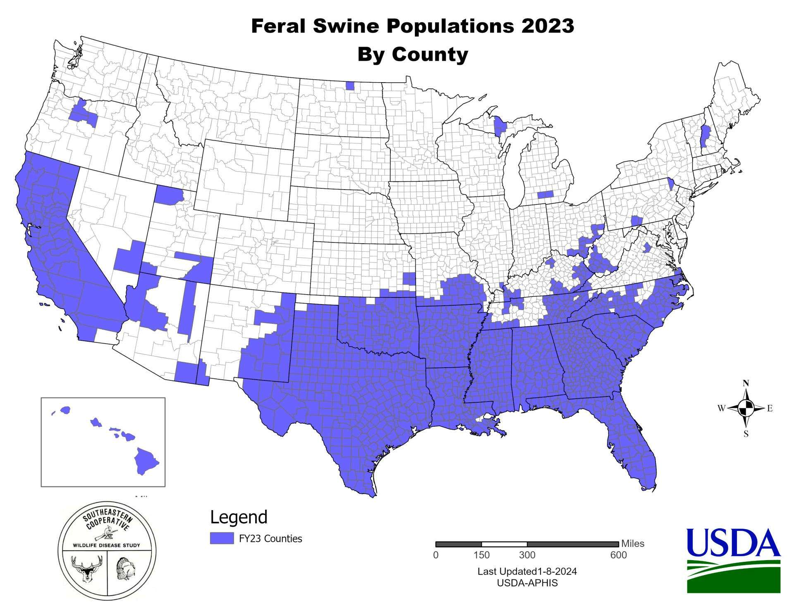

I just re-read Neal Stephenson’s Climate-Fiction novel, Termination Shock. I read this the moment it was published in 2021 and enjoyed it immensely. Having recently finished my winter class, Imagining Adaptive Societies, where I riffed on a few Stephenson-vs.-Robinson comparisons, and lacking anything I desperately wanted to read, it seemed like an opportune time to revisit.
A few things jumped out to me on this second reading.
Stephenson’s Vision of America is Bleak
The novel is set in the near future. It’s not entirely clear when, but it isn’t too far away. For example, the main character, Frederika Mathilde Louisa Saskia, is the Queen of of the Netherlands and is forty-five years old in the book. Saskia, as she is known, is the granddaughter of Queen Beatrix, presumably the (fictional) daughter of King Willem-Alexander (described in both the book and Wikipedia as an “avid pilot”), who was born in 1967. As she is a fictional character, we can’t say for sure when she was born, but Willem-Alexander’s actual children were all born around the turn of the century. So, it could be as late as the 2040s, but I suspect a bit earlier. Saskia’s husband died following COVID infection while volunteering at a hospital. There is textual evidence for COVID pandemics in in 2023 and 2027, in addition to the 2019-2022 one we know all too well. This doesn’t tell us that much because it appears that COVID has become an annual event like influenza is currently (and COVID may already actually be). Saskia had the “latest and greatest” COVID vaccine before flying to Texas. This said, if the husband of a titular head of state is volunteering at a hospital, it is probably during a pandemic crisis, so let’s say 2027. This puts an upper date on when Saskia’s sixteen-year-old daughter, Lotte, could have been born. All told, this makes me think the novel takes place in the mid-2030s. The whole shit-show described by Termination Shock apparently takes place 15 or so years from now.
In a glowing review in Reason magazine, Peter Suderman suggests that Stephenson’s novel is a “Glorious Sci-Fi Vision of How To Respond to Global Warming,” one that favors innovation over legislation. I agree that there is lots of adaptation grist for the mill in Termination Shock, but the thought that the solutions people find in the book to cope with the increasing downsides of climate change are sufficient, or even preferable to actually addressing the root causes of the climate disaster is utter madness. Reading the chaos that Stephenson has written into the United States of the 2030s suggests to me that he can’t think it’s sufficient. He just (like me) is fascinated by people’s ingenuity and sees dramatic potential in these adaptations for, you know, a novel. Stephenson may have a reputation for anticipating new technologies, but ultimately, he is a fiction writer who has to tell a good story. This doesn’t mean that he actually thinks that the seat-of-pants adaptation depicted in the novel is “the very best we can do.”
As products of the Pleistocene, humans were born of climate change. Adapting is something we excel at and have always done. However, one of the most important—and impressive—adaptations our species possesses is the capacity to organize to achieve outcomes that are much greater than the sum of the individual inputs. Anthropogenic climate change is the greatest challenge for collective-action that Homo sapiens has ever faced. We simply must be up to the task.
While the climate crisis is obviously global, in both reality and the novel, I want to focus on the situation in the United States that Stephenson depicts in Termination Shock. There are four features, in particular, that I read as striking warnings that this is not a world we want to let happen: the physical environment of much of the country has become essentially unlivable, endemic vector-borne infectious disease and the threat of pandemics are facts of life, there are terrifying and highly-destructive invasive species wreaking chaos, and the USA is apparently a failed—or at least failing—state. I seriously don’t think this is a near-future we want.
Un-Survivable Wet-Bulb Temperatures
To survive the summer daytime heat in Texas and other parts of the American South, you need to wear a personal air conditioner. These are known as earthsuits.
In a warmer world, it will be increasingly difficult for people (and other organisms) to maintain physiological homeostasis—i.e., stay cool. Normal core temperature for humans is 37°C. Homeostatic mechanisms work to maintain this temperature and tolerances around it are actually quite tight: a 4° increase or 2° decrease can be life-threatening.
Humans have at most about 30% mechanical efficiency. This means that 70% of the work we do ends up generating heat. Our primary mechanism for dumping excess heat in order to maintain homeostasis is the evaporative cooling that comes from sweating. For a thermal challenge to be compensable, there must be a water-vapor pressure gradient between the skin surface and the surrounding environment. If the air is saturated, there’s no gradient and the thermal challenge is uncompensable.
Wet-bulb temperature (WBT) is the lowest temperature that can be reached under ambient conditions by the evaporation of water only. As the WBT increases past 26°C (79°F), it starts to become dangerous. The 2003 European heat wave, which killed 20,000 people, maxed out with a WBT of 28°C. Anything over 30 is very dangerous and a WBT of 35°C (about 95°F) is not survivable by humans for more than about 20 minutes. Until quite recently, it’s been thought that a WBT of 35°C was effectively impossible under the prevailing climatic conditions of Earth, but as of 2020, there here have been at least 14 verified recordings of WBT in excess of the 35°C threshold of human survivability in the Persian Gulf and Pakistan since 1979. Climate change will increases these events. Modeling studies by Im and colleagues (2017) and Kang and Eltahir (2018) project heatwaves that will cross this critical threshold repeatedly in the next 30 years in the hugely-populous areas of the Gangetic Plain in India and the North China Plain in China. These two regions sum to more than a billion people.
Dangerous WBTs will be increasingly common in the United States as well. The worst regions look like they will be in the Mississippi River basin, spilling over into East Texas. These are areas where high summer temperatures combine with extreme humidity and that’s the combination that makes for dangers WBTs.
In Termination Shock, we read about people requiring earthsuits to work during the day in Waco and along the Brazos River to Houston, as well as at protests on the campus of Texas A&M in College Station and the West Texas ranch belonging to T.R. Schmidt, the billionaire who wildcats a geoengineering solution to global warming.
Earthsuits are described as “a whole basket of technologies, some of which belonged to the realm of materials science, such as fabric, or of mechanical engineering, such as pumps and fans.” But really the core of the suit was a portable refrigeration system, which is an Einstein–Szilard refrigerator. It’s a cool idea (as it were) and might actually be workable in the not-too-distant future, though whether we will have functional suits (as opposed to structures) cooled by Einstein–Szilard refrigerator is an open question.
The simple fact is that the large swaths of the United States, including the second-largest state by population and the region that has driven population growth in recent years, are largely uninhabitable without substantial technological innovation and (presumably expensive) adaptation in the mid-2030s world of Termination Shock, is troubling to say the least. This strikes me as an outcome that is worth organizing to prevent.
Perpetual Multidemic
We had a “tripledemic” of influenza, RSV, and SARS-CoV-2 in the winter of 2022. This was nothing compared to the ongoing infection pressure of the near future depicted in Termination Shock.
Queen Saskia received “all the shots recommended for travel to Texas.” These included dengue, Zika, COVID, and malaria. It’s probably worth noting that none of these are currently endemic to Texas (except COVID). The good news is that we apparently have effective vaccines for dengue, Zika, and malaria in this timeline! There is a moderately-effective vaccine for dengue for use in children who have already had one dengue infection. Of course, its maker is discontinuing its manufacturing because it’s hard to make money off of a vaccine for a disease of mostly poor people of the Global South. It just be that way. Maybe if dengue becomes truly endemic in Texas and related locales, the profit motive will return. There’s no vaccine for Zika yet, but there is some promise, and malaria is a whole can of worms (Plasmodia, actually).
Again, this is not a future we should look forward to, even if we develop safe and effective vaccines, pathogens evolve and our recent experience teaches us that safe and effective vaccine availability doesn’t necessarily translate into wide adoption.
Feral Hogs!
In the America of Termination Shock, we are well beyond 30-50 Feral Hogs. Imported European boars have hybridized with escaped agricultural giants to create truly terrifying beasts, running hog-wild in Texas, Louisiana, and beyond. One does wonder how these giant hogs manage to shed heat in an environment that requires humans to don personal refrigerators, but they still sound pretty terrifying. (presumably, these big hogs would need to keep very close to water at all times in such heat)

The swine are not the only invasive species that creates mischief in Termination Shock. Invasive fire ants, apparently attracted to the ozone of residential air-conditioning units, get into the units and interfere with the electrical relays that control the units, making them non-functional. In the Summer of the Great Relay Shortage, this happened on a massive scale, overwhelming the capacity of the supply chain to provide replacement relays and thereby displacing hundreds of thousands of Texans in the potentially deadly heat and humidity. (this, by the way, is another real phenomenon)
Sounds like a lot of fun.
Ominous Geopolitical Suggestions
Possibility the most disturbing elements of the Termination Shock world center on the status of the United States of the near future. There is nothing explicit, but there are hints. For example, we are told that there is a “general inability of Americans to travel outside of the Lower 48.” The United States, which once seemed like an “omnipotent hyperpower,” is more like a “beached whale” in the Termination Shock world.
Discussing the possible consequences of T.R. Schmidt’s geoengineering experiment, the Scottish risk analyst, Alastair, says that since Texas would likely see Schmidt as a hero, any legal consequences would come down to “what’s left of the United States government.” He goes on to say that dysfunction in Congress and the courts virtually eliminates any legal risk whatsoever.
When Canadian-Sikh stick fighter, Laks, is preparing his clandestine entry to the US, his Uncle Dharmender says, “the United States is a mess, sure. But it’s not like going to North Korea.” Well, at least we have that going for us.
The United States, apparently is “a basket case and global laughingstock.” It is “completely insane and out-of-hand,” a “clown show.” People rely on the “the sheer incompetence of the United States” in doing their business.
Does the libertarian ideal really involve giving up on the last best hope of Earth?
Is This Really What We Want?
Suderman suggests that the crisis of climate change simply can’t be solved—it’s “too big, too complex, involving too many people, too many governments, too many interests. You can’t wrap your head around it. No one can.” Do we really believe that the sort of coping adaptations chronicled in Termination Shock are really “the very best we can do”?
The obvious contrast—and one that Suderman, in fact, makes—is the transformative, all-encompassing approach depicted in Kim Stanley Robinson’s Ministry for the Future.
The idea that we can either pursue a top-down governance where we attempt to change laws and norms or we pursue a piecemeal, bottom-up approach to adaptation is a false dichotomy. I recently saw a talk by and have since read the work of Charles Sabel and David Victor (book here; excerpt here). Sabel and Victor argue forcefully that this (and a couple other) false dichotomies are holding us back in our capacity to address the climate crisis, and suggest that we need to pursue an experimentalist approach to fixing climate change. The climate crisis is, indeed, a very difficult problem and we are awash in uncertainty over what the best ways to fix it even are. They write, “the only way to move beyond the status quo is to destabilize it, and then learn, quickly, to use the daring and imagination that bubble up in the open space to develop better approaches” (Sable & Victor 2022: 9). This is the bottom up. It is held together by what starts out as “a thin consensus” of individuals and institutions motivated to act. This consensus may be thin to start, but it needs to set bold goals. It’s these bold goals that hold the structure together, not the specific details of the plan. The thin consensus then “thickens with effort” as we learn about what—and who—works. This is top down. We need both if we are going to get through this crisis.
Termination Shock is a remarkable book, with lots of interesting ideas. It is not a blueprint for how to solve the climate crisis, and I would be shocked if Neal Stephenson actually believed that it was. The bleakness of the portrait Stephenson paints for the United States of the near future makes it clear that this is something worth fighting against.